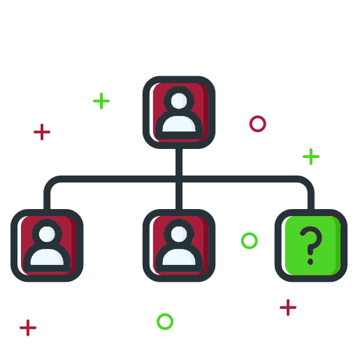

Politique de confidentialité
Nous mettons à jour notre Politique de confidentialité pour mettre en valeur cette nouvelle collaboration, mais également
pour que vous sachiez que vous gardez le contrôle sur les personnes qui voient vos photos. Comme auparavant, vous
déterminez qui peut accéder à vos photos U'Connect. De plus, vous choisissez si vous souhaitez ou non publier vos
photos sur Facebook. Ainsi, nous mettons tout en œuvre pour que notre collaboration avec Facebook vous fasse bénéficier
d’une meilleure expérience, sans toutefois changer les principales fonctionnalités de l’application avec lesquelles
vous êtes familiarisé(e) et que vous appréciez.
Notre nouvelle politique de confidentialité prend effet le 19 novembre 2017.
Date d’entrée en vigueur : 19 novembre 2017
Bienvenue sur U'Connect (ci-après « U'Connect », « nous », « notre », « nos »). U'Connect est une plate-forme remarquable
qui vous permet de partager du contenu multimédia rapidement et en vous amusant. Il vous suffit de prendre un cliché,
de choisir un filtre pour en changer l’aspect, d’ajouter un commentaire si vous le souhaitez et de partager votre
photo !
-
Notre Politique de confidentialité explique comment nous-mêmes et certaines des sociétés avec lesquelles nous travaillons
collectons, utilisons, partageons et protégeons les informations dans le cadre de nos services mobiles, de notre
site web et des logiciels fournis en rapport avec les services U'Connect (ci-après dénommés collectivement le
« Service »). Elle présente également vos options concernant la collecte et l’utilisation de vos données
personnelles.
-
En utilisant notre Service, vous comprenez et acceptez que nous vous fournissons une plate-forme pour la publication de contenus,
notamment de photos, commentaires et autres données (le «
Contenu d’utilisateur ») sur le Service et vous acceptez de partager ce Contenu d’utilisateur publiquement.
Cela signifie que d’autres Personnes qui utilisent le Service peuvent rechercher, voir, utiliser ou partager
le Contenu d’utilisateur que vous publiez sur le Service, conformément aux conditions générales de la présente
Politique de confidentialité et à nos Conditions d’utilisation.
-
Notre Politique de confidentialité s’applique à l’ensemble des visiteurs, des personnes qui ont recours au Service et des
autres personnes qui accèdent au Service (les «
Personnes qui utilisent le Service »).
1.INFORMATIONS QUE NOUS RECUEILLONS
Nous recueillons les types d’informations suivants.
Informations que vous nous fournissez directement :
-
votre nom d’utilisateur, votre mot de passe et votre adresse e-mail lorsque vous vous inscrivez pour créer un compte U'Connect
;
-
les informations que vous nous fournissez pour créer votre profil d’utilisateur (notamment votre nom, votre prénom, votre
photo et votre numéro de téléphone) ; ces données nous permettent d’aider les utilisateurs à se trouver mutuellement
sur U'Connect ;
-
le Contenu d’utilisateur (photos, commentaires et autres supports) que vous publiez sur le Service ;
-
les communications entre U'Connect et vous-même. Il peut s’agir par exemple d’e-mails de notre part, en rapport avec le Service
(vérification du compte, modifications et mises à jour des fonctionnalités du Service, avis techniques et de
sécurité, etc.). Veuillez noter que vous ne pouvez pas refuser de recevoir ce type de messages.
Retrouver vos amis sur U'Connect :
-
Si vous le souhaitez, vous pouvez utiliser la fonctionnalité Rechercher des amis pour trouver d’autres personnes possédant
un compte U'Connect, par le biais (i) de votre liste de contacts, (ii) de sites de réseaux sociaux tiers ou (iii)
d’une recherche parmi les noms et noms d’utilisateurs sur U'Connect.
-
Si vous choisissez de rechercher vos amis au moyen de (i) la liste de contacts de votre appareil, U'Connect accède à vos
contacts afin de déterminer si l’un d’entre eux utilise U'Connect.
-
Si vous choisissez de rechercher vos amis par le biais d’un (ii) site de réseau social tiers, vous êtes invité(e) à créer
un lien vers ce service tiers et vous acceptez que toute information que ce service peut nous fournir soit régie
par la présente Politique de confidentialité.
-
Si vous choisissez de rechercher vos amis grâce (iii) à leurs noms ou noms d’utilisateur sur U'Connect, il vous suffit de
saisir les noms qui vous intéressent et nous lançons une recherche sur notre Service.
-
Remarque sur la fonctionnalité Invitez vos amis : si vous choisissez d’inviter une personne sur le Service
en utilisant la fonctionnalité Invitez vos amis, vous pouvez sélectionner cette personne directement dans vos
contacts sur votre appareil et lui envoyer un texto ou un e-mail depuis votre compte personnel. Vous comprenez
et acceptez que vous êtes responsable des éventuels frais qui s’appliquent aux communications envoyées depuis
votre appareil. Comme ce type d’invitation provient directement de votre compte personnel, U'Connect n’a pas
accès à ces communications et ne les contrôle pas.
Données analytiques :
-
Nous utilisons des outils d’analyse tiers pour mesurer la fréquentation et évaluer les tendances d’utilisation du Service.
Ces outils collectent des données envoyées par votre appareil ou par notre Service, notamment les pages web que
vous visitez, les extensions et autres informations qui nous aident à améliorer la qualité du Service. Nous collectons
et utilisons ces données analytiques avec d’autres informations provenant d’autres Personnes qui utilisent le
Service. Elles ne permettent donc pas d’identifier des utilisateurs en particulier.
Cookies et technologies similaires :
-
Lorsque vous accédez au Service, nous pouvons utiliser des cookies et d’autres technologies similaires (pixels, balise web,
stockage local, etc.) pour rassembler des informations sur la manière dont vous utilisez U'Connect et vous proposer
des fonctionnalités adaptées.
-
Nous pouvons demander à des annonceurs publicitaires ou à d’autres partenaires de diffuser des publicités ou des services
sur vos appareils, en exploitant les cookies ou technologies similaires que nous ou ces tiers avons placés.
Informations des fichiers journaux :
-
Votre navigateur collecte automatiquement des informations de fichier journal chaque fois que vous demandez à accéder à une
page web ou à une application (c’est-à-dire à la visiter). Ces informations peuvent également être rassemblées
au moment du téléchargement du contenu de la page web ou de l’application sur votre navigateur ou votre appareil.
-
Lorsque vous utilisez notre Service, nos serveurs enregistrent automatiquement certaines informations de fichier journal,
notamment votre requête web, votre adresse IP, votre type de navigateur, les pages de référence et de sortie
et les URL que vous consultez, le nombre de clics que vous effectuez et la manière dont vous interagissez avec
des liens sur le Service, les noms de domaine, les pages de destination, les pages visitées et d’autres données
de ce type. Il est également possible que nous collections des informations de ce type à partir d’e-mails envoyés
aux Personnes qui utilisent le Service. Cela nous permet d’identifier les messages qui sont ouverts et les liens
sur lesquels cliquent les destinataires. Grâce à ces informations, nous pouvons établir des rapports précis et
améliorer la qualité du Service.
Identificateurs de périphériques :
-
Lorsque vous utilisez un appareil mobile, comme une tablette ou un téléphone, pour accéder à notre Service, nous pouvons
accéder à un ou plusieurs « identificateurs de périphériques », les collecter, les contrôler, les stocker sur
votre appareil ou les stocker à distance. Les identificateurs de périphériques sont de petits fichiers de données
ou des structures de données similaires qui sont stockés sur, ou associés à, votre appareil mobile et qui permettent
de l’identifier de manière unique. Un identificateur de périphérique peut être composé de données stockées relatives
aux caractéristiques matérielles, au système d’exploitation et aux divers logiciels de l’appareil, ainsi que
d’informations envoyées à l’appareil par U'Connect.
-
Les identificateurs de périphériques peuvent communiquer à U'Connect ou à ses partenaires tiers des informations sur la manière
dont vous parcourez et utilisez le Service et peuvent aider U'Connect ou d’autres à fournir des rapports, des
publicités et du contenu personnalisés. Certains aspects du Service risquent de ne pas fonctionner correctement
si l’utilisation ou la disponibilité des identificateurs de périphériques est gênée ou désactivée.
Métadonnées :
-
Les métadonnées sont généralement des données techniques associées au Contenu d’utilisateur. Elles décrivent par exemple
comment un Contenu d’utilisateur a été recueilli et formaté, à quel moment et par qui.
-
Les Personnes qui utilisent le Service peuvent ajouter ou faire ajouter des métadonnées à leur Contenu d’utilisateur, notamment
des hashtags (pour signaler des mots-clés lors de la publication d’une photo, par exemple), des balises géographiques
(pour indiquer leur emplacement dans une photo), des commentaires ou d’autres données. Les autres Personnes qui
utilisent le Service peuvent ainsi effectuer plus facilement des recherches dans votre Contenu d’utilisateur,
qui est plus interactif. Si vous marquez géographiquement vos photos à l’aide d’API tierces, votre latitude et
votre longitude sont enregistrées avec la photo et permettent d’effectuer des recherches (par exemple, par le
biais d’un emplacement ou d’une caractéristique cartographique) si vous rendez vos photos publiques, dans le
respect de vos paramètres de confidentialité.
2. UTILISATION DE VOS DONNÉES PERSONNELLES
En plus des cas d’utilisation spécifiques décrits dans la présente Politique de confidentialité, il est possible que
nous utilisions les données que nous recevons aux fins suivantes :
-
vous aider à accéder efficacement à vos données personnelles après votre connexion ;
-
mémoriser vos données personnelles pour vous éviter d’avoir à les saisir de nouveau pendant votre visite ou à l’occasion
de vos prochaines visites sur le Service ;
-
vous fournir, à vous et à des tiers, du contenu et des informations personnalisés, pouvant inclure des publicités en ligne
et autres formes de marketing ;
-
assurer, améliorer, tester et contrôler l’efficacité de notre Service ;
-
développer et tester de nouveaux produits et fonctionnalités ;
-
surveiller différents indicateurs (notamment le nombre total de visiteurs, la fréquentation et des schémas démographiques)
;
-
diagnostiquer ou résoudre des problèmes techniques ;
-
automatiquement mettre à jour l’application U'Connect sur votre appareil.
-
U'Connect ou d’autres Personnes qui utilisent le Service peuvent organiser des concours, des offres spéciales ainsi que d’autres
activités et évènements spéciaux (les « Évènements ») sur le Service. Si vous ne souhaitez pas participer à un
Évènement, n’utilisez pas les métadonnées (hashtags ou balises géographiques) qui lui sont associées.
3. PARTAGE DE VOS DONNÉES PERSONNELLES
Nous nous engageons à ne pas louer ni vendre vos données personnelles à des tiers externes à U'Connect (ou au groupe
de sociétés dont U'Connect fait partie) sans votre consentement, sauf disposition contraire énoncée dans la présente
Politique.
Tiers avec lesquels nous pouvons partager vos données personnelles :
-
Nous pourrons partager votre Contenu d’utilisateur et vos données personnelles (y compris, mais sans s’y limiter, des cookies,
fichiers journaux, identificateurs de périphériques, données d’emplacement et données d’utilisation) avec des
entreprises qui font légalement partie du même groupe de sociétés qu’U'Connect ou qui rejoignent ce groupe (les
« Filiales »). Les Filiales peuvent utiliser ces données pour contribuer à fournir, comprendre et améliorer le
Service (notamment en fournissant des analyses) et leurs propres services (par exemple en vous offrant une expérience
enrichie et plus pertinente). Les Filiales doivent toutefois respecter vos choix concernant les personnes autorisées
à voir vos photos.
-
Nous pourrons également partager vos données personnelles, ainsi que des informations telles que des données d’emplacement,
cookies, fichiers journaux et identificateurs de périphériques, avec des organisations tierces (les « Prestataires
de services ») afin de vous fournir le Service. Nos Prestataires de services auront accès à vos données personnelles
selon ce qui est raisonnablement nécessaire pour vous fournir le Service dans le respect des conditions de confidentialité
raisonnables.
-
Nous pourrons également partager certaines informations, telles que des données de cookies, avec des partenaires publicitaires
tiers. Ces informations permettent aux réseaux publicitaires tiers, entre autres choses, de diffuser des publicités
ciblées susceptibles de vous intéresser réellement.
-
Nous pourrons supprimer certaines données qui permettent de vous identifier et partager des données rendues anonymes avec
d’autres parties. Nous pourrons aussi combiner certaines données avec d’autres afin qu’elles ne puissent plus
être associées à vous, et partager ces données agrégées.
Tiers avec lesquels vous pouvez choisir de partager votre Contenu d’utilisateur :
-
Toute information ou tout contenu (Contenu d’utilisateur ou autre) que vous divulguez volontairement en vue d’une publication
sur le Service devient disponible pour le public et est soumis aux paramètres de confidentialité applicables
que vous avez définis. Pour modifier vos paramètres de confidentialité sur le Service, vous devez modifier vos
paramètres de profil. Une fois que vous avez partagé votre Contenu d’utilisateur ou que vous l’avez rendu public,
il peut être à nouveau partagé par d’autres.
-
En fonction de vos paramètres de confidentialité et de profil, tout Contenu d’utilisateur que vous rendez public peut faire
l’objet de recherches par d’autres Personnes qui utilisent le Service et peut être utilisé par l’API U'Connect.
L’utilisation de l’API U'Connect est soumise aux Conditions d’utilisation de l’API qui intègrent les conditions
de la présente Politique de confidentialité.
-
Si vous supprimez des informations que vous avez publiées sur le Service, leurs copies peuvent rester visibles, soit dans
les pages archivées et mises en cache du Service, soit si d’autres Personnes qui utilisent le Service ou tierces
parties utilisant l’API U'Connect les ont copiées ou enregistrées.
Scénario en cas de changement de propriétaire :
-
Si nous vendons ou transférons de quelque manière que ce soit U'Connect ou nos actifs, en tout ou partie (par exemple, dans
le cadre d’une fusion, d’une acquisition, d’une faillite, d’une dissolution ou d’une liquidation) à une autre
organisation, vos données personnelles (notamment votre nom, votre adresse e-mail, votre Contenu d’utilisateur
et toute autre information collectée par le biais du Service) pourront faire partie des éléments vendus ou transférés.
Vous continuerez néanmoins à être propriétaire de votre Contenu d’utilisateur. L’acheteur ou le bénéficiaire
du transfert devra alors respecter les engagements que nous avons pris dans le cadre de la présente Politique
de confidentialité.
Réponse à des requêtes judiciaires et prévention de tout risque de dommage :
-
Nous pourrons accéder à vos données personnelles, les conserver et les partager en réponse à une demande légale (mandat de
perquisition, ordonnance d’un tribunal ou autre) si nous pensons en toute bonne foi que la loi nous y oblige.
Cela peut inclure la réponse à des demandes légales provenant de juridictions en dehors des États-Unis, lorsque
nous avons toutes les raisons de penser que la réponse est requise par la loi de cette juridiction, qu’elle s’applique
aux personnes qui utilisent le service et qui dépendent de cette juridiction et qu’elle est conforme aux normes
internationalement reconnues. Nous pouvons également accéder à vos informations, les conserver et les communiquer
quand nous estimons qu’elles sont nécessaires pour détecter et empêcher la fraude ou toute autre activité illicite,
pour protéger vos intérêts, les nôtres ou ceux d’autrui, et pour prévenir tout préjudice corporel imminent. Nous
pourrons accéder à vos données personnelles, les traiter et les conserver pendant une période prolongée dans
le but de répondre à une requête judiciaire, à une enquête gouvernementale ou une enquête concernant la possible
violation de nos conditions ou politiques, ou en vue d’empêcher tout dommage.
4. STOCKAGE DE VOS DONNÉES PERSONNELLES
Stockage et traitement :
-
Les données personnelles collectées par le biais du Service peuvent être stockées et traitées aux États-Unis ou dans tout
autre pays dans lequel U'Connect, ses Filiales et ses Prestataires de services sont basés.
-
U'Connect, ses Filiales et ses Prestataires de services pourront transférer les informations qui vous concernent, y compris
vos données personnelles, à l’étranger et depuis votre pays ou votre juridiction vers d’autres pays ou juridictions
dans le monde. Si vous résidez dans l’Union européenne ou dans une autre région dont les lois sur la collecte
et l’utilisation de données diffèrent de celles des États-Unis, veuillez noter que nous pourrons transférer des
informations, y compris des données personnelles, vers un pays ou une juridiction dont les lois sur la protection
des données diffèrent de celles de votre juridiction.
-
En vous abonnant au Service et en l’utilisant, vous acceptez le transfert de vos données personnelles vers les États-Unis
ou vers tout autre pays dans lequel U'Connect, ses Filiales ou Prestataires de services sont basés. Vous acceptez
également la divulgation et l’utilisation de vos données personnelles, conformément à la présente Politique de
confidentialité.
-
Nous prenons des mesures raisonnables de protection pour assurer la sécurité des informations collectées par le biais du
Service et vérifier l’identité des utilisateurs (notamment à l’aide d’un système de mot de passe unique) avant
de leur accorder l’accès à leur compte. Toutefois, U'Connect ne peut pas assurer la sécurité des données que
vous nous transmettez ni garantir la protection des informations publiées sur le Service contre les accès, divulgations,
modifications et destructions.
-
Nous sollicitons votre aide pour cela. Vous êtes responsable du maintien de la confidentialité de votre mot de passe unique
et des informations de votre compte, ainsi que du contrôle de l’accès aux e-mails entre vous-même et U'Connect,
à tout instant. Vos paramètres de confidentialité peuvent aussi être affectés par des changements que les services
de réseaux sociaux que vous connectez à U'Connect apportent à leurs services. Nous ne sommes pas responsables
des fonctionnalités, de la confidentialité, ni des mesures de sécurité des autres organisations.
5. VOS CHOIX CONCERNANT VOS DONNÉES PERSONNELLES
Informations sur votre compte et paramètres de profil/confidentialité :
-
Vous pouvez mettre votre compte à jour à tout moment en vous connectant et en modifiant les paramètres de votre profil.
-
Pour ne plus recevoir d’e-mails de notre part, il vous suffit de cliquer sur le lien de désabonnement inclus dans chacun
des messages. Comme indiqué plus haut, vous ne pouvez pas refuser les communications en rapport avec le Service
(vérification du compte, confirmations et rappels concernant les achats et la facturation, changements et mises
à jour des fonctionnalités du Service, avis techniques et de sécurité, etc.).
Durée de conservation de votre Contenu d’utilisateur :
-
Après la résiliation ou la désactivation de votre compte, U'Connect, ses Filiales ou ses Prestataires de services pourront
conserver certaines données (y compris les informations de votre profil) et votre Contenu d’utilisateur pendant
une durée raisonnable commercialement parlant, à des fins de sauvegarde, d’archivage ou d’audit.
6. PROTECTION DE LA VIE PRIVÉE DES ENFANTS
U'Connect ne collecte ni ne sollicite intentionnellement de données personnelles concernant des personnes âgées de moins
de 13 ans. Les enfants de moins de 13 ans ne sont pas autorisés à utiliser le Service. Le Service et son contenu
ne sont pas destinés aux enfants de moins de 13 ans. Si nous apprenons avoir recueilli de telles données personnelles
d’un enfant de moins de 13 ans sans le consentement de ses parents, nous supprimerons ces informations dans les plus
brefs délais. Si vous pensez que nous pourrions détenir des informations concernant un enfant de moins de 13 ans
ou provenant d’un enfant de moins de 13 ans.
7. AUTRES SITES WEB ET SERVICES
Nous ne sommes pas responsables des pratiques employées par les sites web et services liés à notre Service ou provenant de
notre Service, y compris les informations et le contenu qu’ils renferment. Veuillez garder à l’esprit que notre Politique
de confidentialité ne s’applique pas aux autres sites web et services de tiers auxquels vous accédez depuis des liens
figurant sur notre Service. Votre navigation sur des sites web ou services tiers et votre interaction avec eux, y
compris ceux qui disposent d’un lien vers notre site web, sont soumises aux propres règles et politiques de ces sites
web et services tiers. De plus, vous reconnaissez que nous ne sommes pas responsables des tierces parties que vous
autorisez à accéder à votre Contenu d’utilisateur et que nous ne les contrôlons pas. Si vous utilisez un site web
ou service tiers et que vous l’autorisez à accéder à votre Contenu d’utilisateur, vous le faites à vos propres risques.
8. SIGNALER LE DÉCÈS D’UN UTILISATEUR
Nous ne sommes pas responsables des pratiques employées par les sites web et services liés à notre Service ou provenant
de notre Service, y compris les informations et le contenu qu’ils renferment. Veuillez garder à l’esprit que notre
Politique de confidentialité ne s’applique pas aux autres sites web et services de tiers auxquels vous accédez depuis
des liens figurant sur notre Service. Votre navigation sur des sites web ou services tiers et votre interaction avec
eux, y compris ceux qui disposent d’un lien vers notre site web, sont soumises aux propres règles et politiques de
ces sites web et services tiers. De plus, vous reconnaissez que nous ne sommes pas responsables des tierces parties
que vous autorisez à accéder à votre Contenu d’utilisateur et que nous ne les contrôlons pas. Si vous utilisez un
site web ou service tiers et que vous l’autorisez à accéder à votre Contenu d’utilisateur, vous le faites à vos propres
risques.
9. COMMENT NOUS CONTACTER
En cas de décès d’une personne qui utilise U'Connect, contactez l'IPI. Dans une telle situation, nous communiquons généralement
par e-mail. Si nous avons besoin de renseignements supplémentaires, nous vous contacterons donc à l’adresse e-mail
indiquée dans votre demande.
10. MODIFICATIONS DE LA POLITIQUE DE CONFIDENTIALITÉ
U'Connect se réserve le droit de modifier ou de mettre à jour de temps à autre la présente Politique de confidentialité.
Veillez donc à la consulter régulièrement. Selon les circonstances, nous pourrons vous avertir de modifications et
mises à jour par d’autres moyens. En continuant à utiliser U'Connect ou le Service après toute modification de la
présente Politique de confidentialité, vous signifiez votre acceptation de ces modifications.
© 2017 U'Connect, Inc.